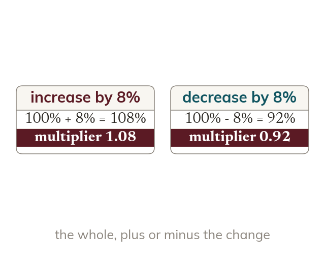
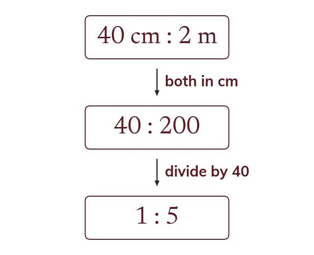
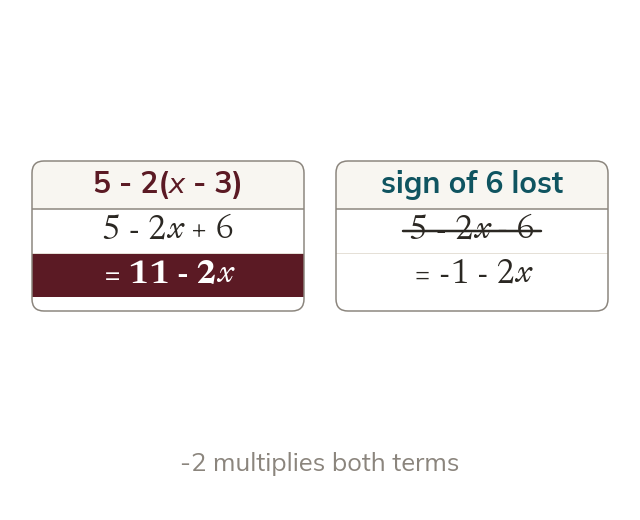
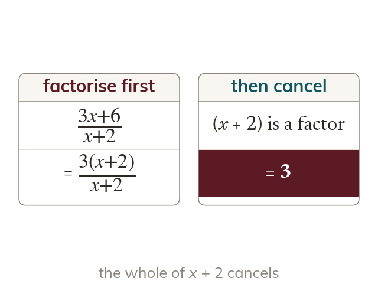

Multipliers
A percentage change is one multiplier. An increase of 8% multiplies by 1.08, and a decrease of 8% by 0.92.
Nothing in this lesson is new, which is exactly why it is dangerous: multipliers, ratio and algebraic fractions are assumed without comment from chapter 2 onwards, so a gap you leave open today is one you meet again in the middle of something harder.
Work down the page at your own pace. Write every answer in your book first, then click to check it.
Read each card, then follow the worked examples one step at a time.

A percentage change is one multiplier. An increase of 8% multiplies by 1.08, and a decrease of 8% by 0.92.

A ratio compares like with like. So both parts are put in the same unit before simplifying.
Pick an answer. If it's wrong, the feedback tells you which mistake it was.
Section 1.1 Numbers and the number system (p1-3): ratios across units, percentages with multipliers, and fraction arithmetic without a calculator.
Read each card, then follow the worked examples one step at a time.

A negative outside a bracket multiplies every term inside. So -2(x - 3) gives -2x + 6.

An algebraic fraction cancels only factors of the whole top and bottom. So the top is factorised first.
Pick an answer. If it's wrong, the feedback tells you which mistake it was.
Section 1.2 Simplifying expressions (p4-6): expanding and collecting, factorising, and simplifying, multiplying and dividing algebraic fractions.
Finished? Next lesson: 1.3-1.4 Equations and Algebraic Reasoning.
Log in, then search for a code to practise that skill.